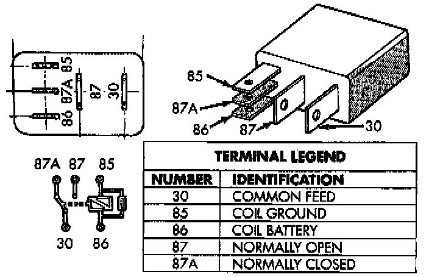

Vehicle Theft Security System/Vehicle Immobilizer System
WARNING: ON VEHICLES EQUIPPED WITH AIRBAGS, REFER TO AIR BAGS AND SEAT BELTS/AIR BAGS BEFORE ATTEMPTING ANY STEERING WHEEL, STEERING COLUMN, OR INSTRUMENT PANEL COMPONENT DIAGNOSIS OR SERVICE. FAILURE TO TAKE THE PROPER PRECAUTIONS COULD RESULT IN ACCIDENTAL AIRBAG DEPLOYMENT AND POSSIBLE PERSONAL INJURY.The Vehicle Theft Security System (VTSS) or the vehicle immobilizer system and the data bus network should be diagnosed using the DRB scan tool and the proper Computers and Control Systems/Body Control Module/Testing and Inspection Procedures. The DRB will provide confirmation that the bus is functional, that the Body Control Module (BCM) is receiving and sending the proper messages on the bus, that the BCM is receiving the proper hard-wired inputs and sending the proper hard-wired outputs, and that the Powertrain Control Module is receiving the bus messages from the BCM. Refer to the Vehicle Theft Security System menu item on the DRB scan tool for the procedures.
Relay Terminals:

Relays
The horn relay is located in the Power Distribution Center (PDC) in the engine compartment. The auto headlamp and park lamp relays are located in the junction block in the passenger compartment. Each of these relays can be tested as described in the following procedure, however the circuits they are used in do vary.
Remove the relay from the PDC or junction block to perform the following tests:
1. A relay in the de-energized position should have continuity between terminals 87A and 30, and no continuity between terminals 87 and 30. If OK, go to Step 2. If not OK, replace the faulty relay.
2. Resistance between terminals 85 and 86 (electromagnet) should be 75 ± 5 ohms. If OK, go to Step 3. If not OK, replace the faulty relay
3. Connect a battery to terminals 85 and 86. There should now be continuity between terminals 30 and 87, and no continuity between terminals 87A and 30. If OK, test the relay circuits. If not OK, replace the faulty relay.